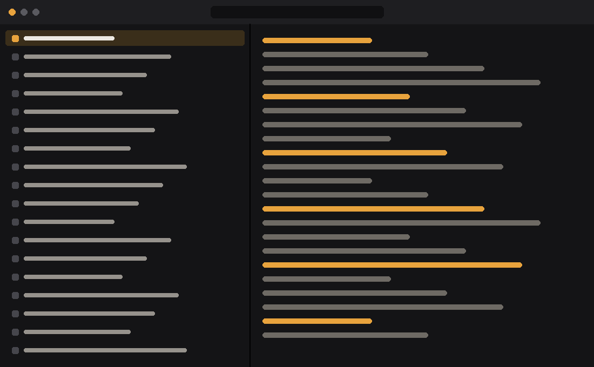
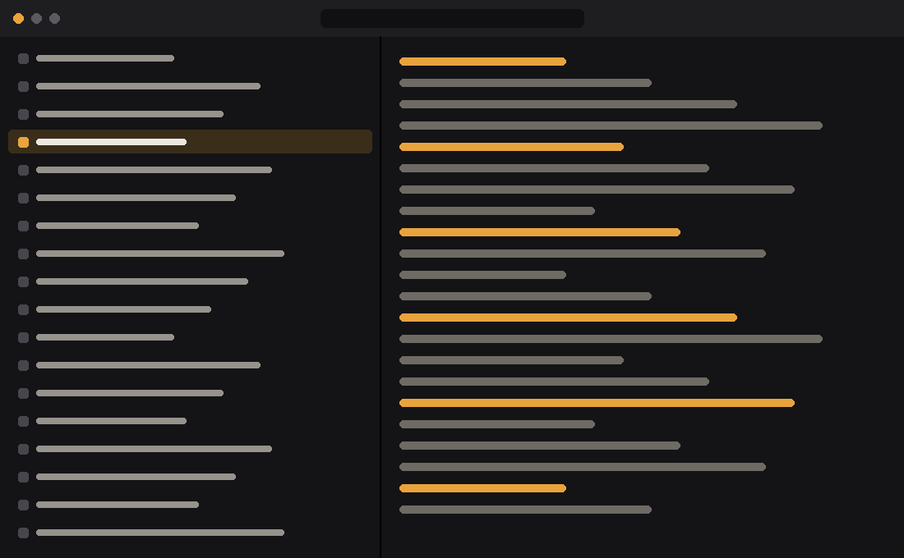
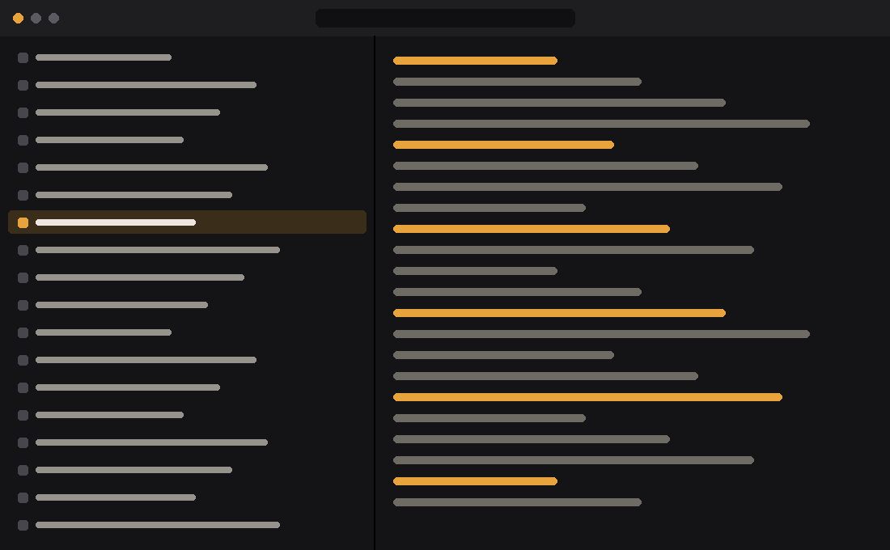
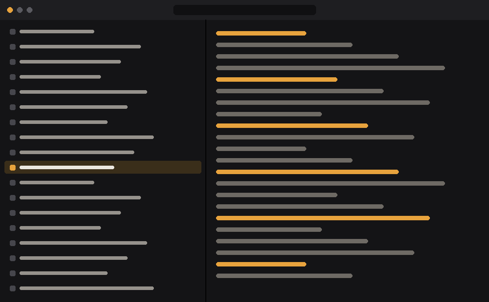

A first feature
What it does for the reader, in two lines. Name the keys and the commands: example run.
A short line that says what the project is.
· Nix: nix profile add github:owner/example · MIT

What it does for the reader, in two lines. Name the keys and the commands: example run.
A measured fact is better than an adjective: it starts in 30 ms, at 0 % CPU when it waits.
Each card says one thing. Six cards fill two rows on a wide screen.
The grid goes to two columns, then one, as the screen narrows.
Code reads as code: example --help.
The last card can say how to set it: example set key value.



One program for Windows 10 and 11 (x64). Unzip it and start example.exe.
example-{{version}}-windows-x64.zip
The flake builds it from source: nix run github:owner/example.
nix profile add github:owner/example
The README says the rest.